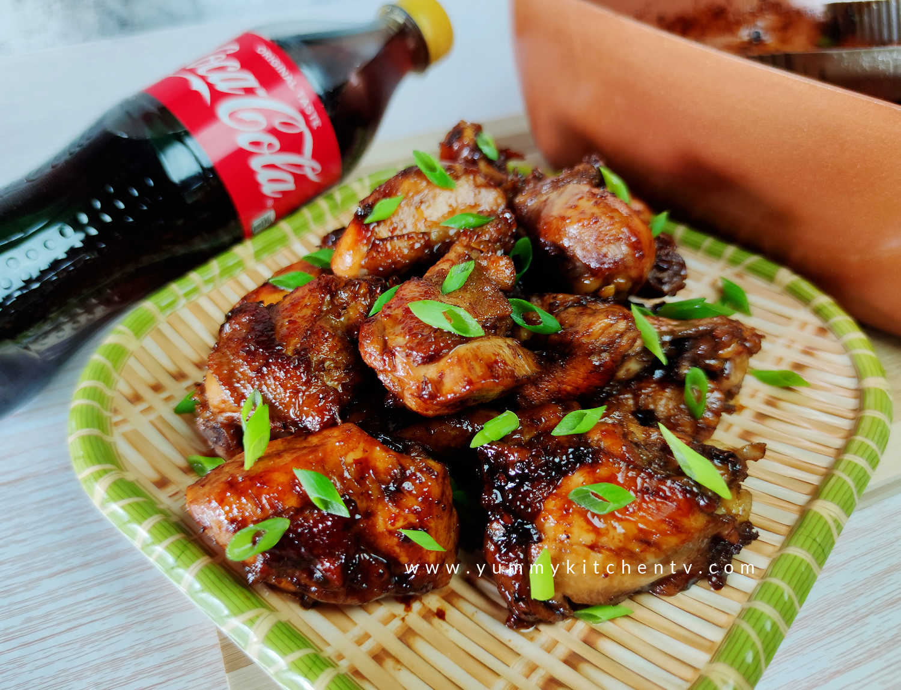

Cola Wings

Sweet and savory baked chicken wings tossed in Cola sauce
Party favorites and loved by all, these wings will have everyone coming back for seconds
Ingredients
- 4 pounds chicken wings, tips discarded
- 1 teaspoon garlic salt
- 1 teaspoon onion powder
- 1 (12 fluid ounce) can cola-flavored carbonated beverage
- 1 cup packed light brown sugar
- 2 tablespoons soy sauce
Directions
- Preheat oven to 325 degrees F (165 degrees C).
- Place chicken wings in a shallow casserole dish. Season with garlic salt and onion salt. Mix cola, sugar, and soy sauce; pour mixture over chicken wings.
- Bake, covered, at 325 degrees F (165 degrees C) for 2 hours. Turn wings over every 30 minutes. Uncover, and bake for an additional 1 to 2 hours. Turn wings every 30 minutes or so.
Go to Home Page